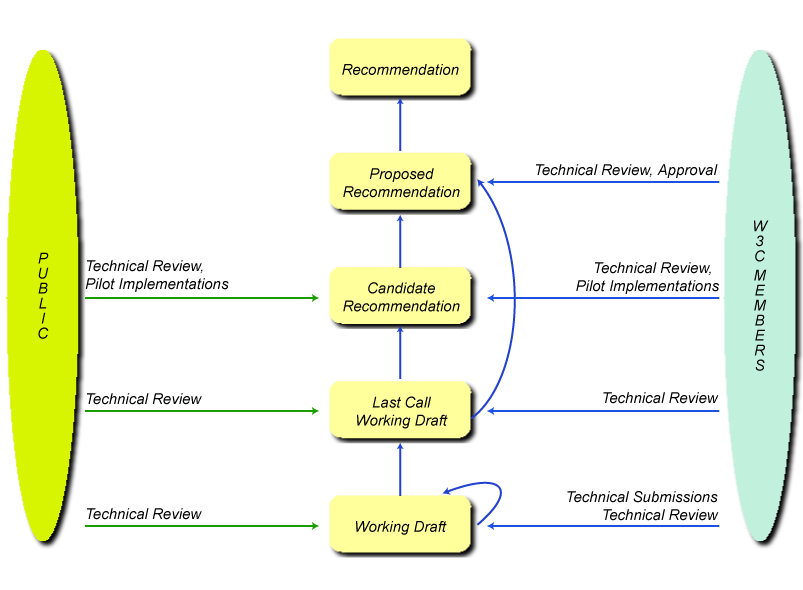

Acknowledgements
- Steve Bratt
- Richard Ishida
- José Manuel Alonso
This was the start…
 “ The people who built the Internet and Web have a
real appreciation of the value of individuals
and the value of systems in which individuals play their
role, with both a firm sense of their own identity and a
firm sense of some common good.
“ The people who built the Internet and Web have a
real appreciation of the value of individuals
and the value of systems in which individuals play their
role, with both a firm sense of their own identity and a
firm sense of some common good.
[…]
 - Photo by Oreste Signore") I was very lucky, in working at CERN, to be in an
environment that Unitarian
Universalists and physicists would equally
appreciate: one of mutual respect, and of
building something very great through collective
effort that was well beyond the means of any one
person - without a huge bureaucratic
regime.
I was very lucky, in working at CERN, to be in an
environment that Unitarian
Universalists and physicists would equally
appreciate: one of mutual respect, and of
building something very great through collective
effort that was well beyond the means of any one
person - without a huge bureaucratic
regime.
[…]
The system produced a weird and wonderful machine, which
needed care to maintain, but could take advantage of the
ingenuity, inspiration, and
intuition of individuals in a special way.
That, from the start, has been my goal for the World
Wide Web. ”
(Tim Berners-Lee - Weaving the Web, p. 208-209)
World Wide Web Consortium (W3C)

“To lead the World Wide Web to its full potential
by developing protocols and guidelines that ensure
long-term growth for the Web”
- Founded in 1994 by Tim Berners-Lee
- Fair and effective process
- Royalty-free patent policy
- Global focus
-
One Web, based on free & open standards
(Recommendations)
The Recommendation Track

Vision for the future of the Web
- Expanding from a Web of:
- linked documents
- creators & consumers
- …to One Web
- of Linked Data
- on Everything
- for Everyone
The same information is available to all users,
regardless of who they are, where they are, what
system they use, or how they are connected
One Web: For Everyone, Connecting & Empowering All
People
The Web is a social environment
 “The Web is more a social creation than
a technical one. I designed it for a social effect - to
help people work together - and not as a
technical toy. The ultimate goal of the Web is to
support and improve our weblike existence in
the world.”
“The Web is more a social creation than
a technical one. I designed it for a social effect - to
help people work together - and not as a
technical toy. The ultimate goal of the Web is to
support and improve our weblike existence in
the world.”
The social value of the Web is that it enables human
communication, commerce, and opportunities to share
knowledge [and] to make these benefits available to
all people, whatever their hardware, software,
network infrastructure, native language,
culture, geographical location, or physical or
mental ability.
(Tim Berners-Lee - Director of W3C and inventor of
the Web)
Is the Web 2.0 really a social environment?

David Simonds, The Economist
Could everyone have access to the Web?
Digital Divide
How can the Web help humanity?
-
Some figures (to think about…)
-
- Not using the Web: ~5.000.000.000
- Living on $1.25/day or less: ~1.400.000.000
- Under-nourished: ~920,000,000
- Illiterate: ~900,000,000
-
Many ather barriers and threats:
-
- Lack of support for languages and
fonts
- Lack of support for people with
disabilities (reduced functionaality)
- Poprietary solutions vs open standards
-
Censorship, discriminatory access
- Understanding of how the Web works
- Understanding of how the Web can best empower
people
(numbers from 2007/2008)
Mission of the World Wide Web Foundation

-
http://www.webfoundation.org/
-
Advance the Web
-
Connect humanity
-
Empower people
- “The Web Foundation will break-down the
barriers that now prevent billions of people from
being connected and empowered by the Web, while
advancing future technologies leading toward a
more capable, useful and usable Web for all people on
the planet.”
Web accessibility
Why accessible?
- Web sites and web applications
must be accessible
- The Web has rapidly become a pervasive
presence in many countries
- Web important facilitator of e-Government
services (even in countries that are newer to the Web)
- United Nations Convention on Rights of Persons
with Disabilities
- Explosion of Web 2.0, Rich Internet
Applications (RIA) and social networking
make e-Inclusion imperative, and exclusion of
people with disabilities and older people has become
unconscionable
WCAG 2.0 in a nutshell
- general principles (long lasting)
-
guidelines
-
testable Success Criteria (SC)
-
not tied to specific technologies
- addressing new (and future) technologies
- involvement of experts from all the world
-
Web Standard: doesn't fragment the Web
Components of Web Accessibility
-
Content
-
Text, images, forms, multimedia, applications, etc.
-
Developers
-
Using authoring tools, editors, validators, CMS
(Content Management Systems).
Should be accessible and produce
accessible content
-
Users
-
Use User Agent (browser, media player, etc.)
to access content.
Less effort by web designers, if User Agents follow the
accessibility rules
- W3C develops:
- accessibility guidelines (for Authoring
Tools, Web Content, User Agents)
-
techical specifications (HTML, XML, CSS,
SVG, SMIL, etc.)
Multilingual Web
It's not just a matter of language translation!
Some issues
- Encoding
- Colors
- Navigation
(Quoting
http://www.designer-daily.com/thoughts-on-multilingual-web-design-5442)
About the author: Christian Arno is the founder
of global translations company and
website localization specialists Lingo24. In the past
twelve months, Lingo24 translated over thirty million
words for companies in sixty countries and their turnover
in 2009 was $6.1m USD.
Some issues: Unicode
-
Computing industry standard that enables
computers to consistently display text in most of the alphabets
and writings systems of the world
-
Adopted by leaders from the IT industry
-
Supported in most of the standard operating
systems and internet browsers
- Most popular design applications facilitate
the development of Unicode web pages
- The best option when creating websites for
international markets, as it allows you to use characters
from many different alphabets and languages
However, quoting some colleagues of mine:
Don't mind about UTF-8, ISO-8859-1
is yet much more than we need!
Some issues: Colors
- Color can play a significant role
- Choice of colors can be related to the site content:
- environmental organization? maybe a lot of
green
- water sports equipment? maybe a lot of
aqua blue
- But be aware of target country and culture!
-
Red can denote
danger or love in western cultures,
whilst can signify purity in India and
good luck in China.
-
Purple can signify
“royalty” in the west, or
“mourning” in some eastern
countries (Thailand).
-
Black denotes
death in Western cultures, but in many Eastern
countries, white is used
for this
-
Green represents the
natural world in many cultures, but would you
put an illustration of a green hat on your site, if you
are addressing the China market? (Click image for
details)
- When launching into new markets, or designing for a
worlwide organization, carefully consider the
website’s color scheme from the very
beginning
Some issues: Navigation
- A crucial aspect of any website’s
design
-
Good navigation keeps visitors on
track to reach their goal.
-
Bad navigation: likely will lose
visitors
-
Vertical menu on the left of your
English-language website?
- consider switching it to the opposite side for
languages that read “right to left”, such
as Arabic
- not essential, but consider as the site will
appear to the visitors
-
Horizontal menu
- more consistent
- no need to make alterations
- Using IP2Country services to detect the
location of the visitor based on their IP address,
altering the display to suit the layout and language of
the visitor?
- not 100% dependable
- best allowing the user to select their language
manually (clearly labeled options at the top of the
page, no flags!)
Where is multilingualism in W3C Standards?

- Worldwide (3 hosts, 18 Offices)
- Official language: American English!
An example: the Ruby annotation
- A W3C Recommendation (31
st may 2001)

- Beware of a multilingual/multicultural
issue:
- it's different from the other Ruby…
-
, from her facebook profile (ANSA) - taken from: http://blog.panorama.it/italia/files/2010/11/ruby-large.jpg") …very popular
in Italy
…very popular
in Italy
Conclusion
- The Web is…
- not just technology, but…
-
Humanity Connected by Technology
- …and what that technology and those links
can do to empower all people
-
One web (multilingual, multicultural)
-
 Get involved! become a
first class actor to drive the evolution of the Web
Get involved! become a
first class actor to drive the evolution of the Web


: utilizzo di un cellulare da un' imbarcazione")